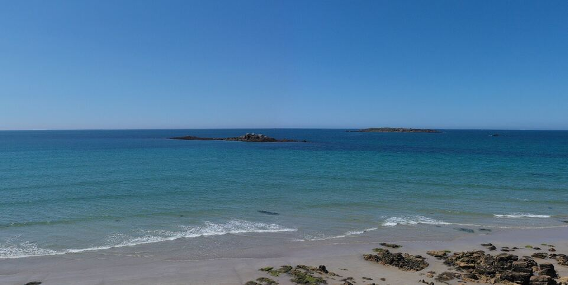

Chapitre 1 — Le secteur
Entre terre et océan
Nichée au cœur du littoral morbihannais, Erdeven est un village balnéaire où la nature s'exprime en grand format. Ses 8 km de plages sauvages, ses dunes protégées et ses sentiers côtiers offrent un décor privilégié pour respirer, marcher, se ressourcer.




8 kmde plages sauvages et de dunes protégées
15 minde la gare TGV d'Auray — Paris direct
RN 165accès rapide à Lorient et Vannes